Tutorial on general Polynomial Chaos Expansion (gPCE) by projection
Contents
- Introduction
- 1. Define the deterministic solver
- 2. Define distribution of uncertain parameters
- 3. Specify the basis
- 4. Determine norms 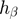 of basis functions
- 5. Compute/Get integration rule 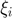, 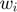 for 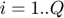
- 6-8. Evaluate basis function and compute coefficients
- 9. Get statistics of 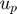 and evaluate proxi model at any parameter values 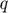
Introduction
Oscillating mass example: calculate gPCE of the position of the oscillating mass at a certain snapshot by orthogonal projection
The abstract framework:
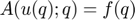
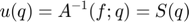
Surrogate/proxi model:
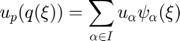
Orthogonal projection: 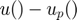 should be orthogonal to the subspace 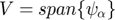
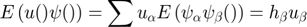
Algorithm:
- Define the deterministic solver
- Define distribution of uncertain parameters
- Specify the basis polynomials 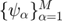 and by that also the subspace
- Determine norms 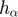 of basis functions
- Compute/Get integration rule , for 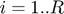
- Solve 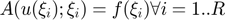 call them 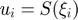
- Evaluate basis functions 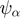 at all the integration points
- Compute the coefficients from 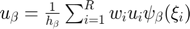
- Get statistics of and evaluate proxi model at any parameter values
1. Define the deterministic solver
% the deterministic inputs x0=1; v0=0; T=10; d=0; % function handle [x, v]=solve_func([m,k]) solve_func = @(q)(spring_solve(x0, v0, q(1), d, q(2), T)); % define the output component we are interested in c=1; % number of responses n_out=2;
2. Define distribution of uncertain parameters
% Initiate SimParamSet Q=SimParamSet(); % Add parameters k and m to the set Q.add(SimParameter('m', UniformDistribution(0.5,2.5))); Q.add(SimParameter('k', UniformDistribution(0.5,2.5)));
3. Specify the basis
%gpc order p_gpc=12; % Define approximating subspace V V=Q.get_germ; V_u=gpcbasis_modify(V,'p', p_gpc); % Number of basis funcions: M=gpcbasis_size(V_u,1);
4. Determine norms of basis functions
h_beta=gpcbasis_norm(V_u);
5. Compute/Get integration rule , for
% Take the tensor product of the 'p_int' point integration rule p_int=p_gpc+1; [xi,w]=gpc_integrate([], V_u, p_int, 'grid', 'full_tensor'); % Or one could use sparse grid (for 2 RVs it would not make sense): %[xi,w]=gpc_integrate([], V_u, degree, 'grid', 'smolyak'); % Number of the integration points R=length(w);
6-8. Evaluate basis function and compute coefficients
% Initiate memory for coefficients u_beta=zeros(n_out,M); % 6) Solve $A(u(\xi_i);\xsi_i)=f(\xi_i)$ for all $i=1.. Q$ for i=1:R %for each integration point xi_i=xi(:,i); q_i=Q.germ2params(xi_i); [S_i(1,1), S_i(2,1)]=solve_func(q_i); % 7) Evaluate basis functions $\psi_\alpha$ at \xi_i Psi_i=gpcbasis_evaluate(V_u,xi_i, 'dual', true); w_i=w(i); % 8) Compute coefficient from $u_\beta=\frac{1}{h_\beta}\sum_{i=1}^Q w_i u_i \psi_\beta(\xi_i)$ u_beta=u_beta+bsxfun(@times, S_i*w_i*Psi_i, 1./h_beta'); end
9. Get statistics of and evaluate proxi model at any parameter values
% Plot response surface and interpolation points plot_response_surface(u_beta(c,:), V_u) % Response surface u=gpc_evaluate(u_beta(c,:), V_u, xi); % Plot proxi model at integration points hold on; plot3(xi(1,:), xi(2,:), u(1,:)+0.002, 'kx'); hold off; % Compute mean and variance of $u_p$: [u_mean, u_var]=gpc_moments(u_beta, V_u) % Compute sensitivity of $u$ to the uncertainties of $k$ and $m$: [u_part_vars, I, sobol_index]=gpc_sobol_partial_vars(u_beta, V_u) % Plot Sobol-sensitivities figure labels={'u_{var} due to var of m', 'u_{var} due to var of k', 'u_{var} due to vars of k and m'}; pie3(sobol_index(1,:),[0,0,1]) legend(labels) title('Sobol sensitivities of u to uncertainties of k and m')
u_mean =
-0.0242
0.0051
u_var =
0.5064
0.5935
u_part_vars =
0.0126 0.0511 0.4427
0.0260 0.0299 0.5377
I =
1 0
0 1
1 1
sobol_index =
0.0249 0.1010 0.8741
0.0438 0.0503 0.9059
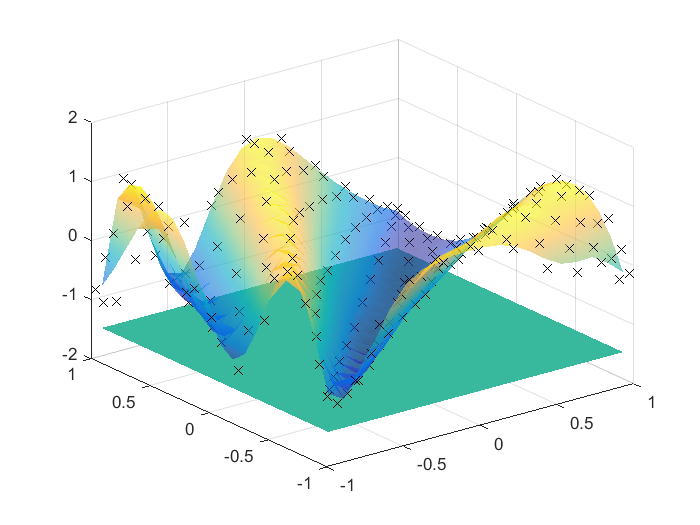 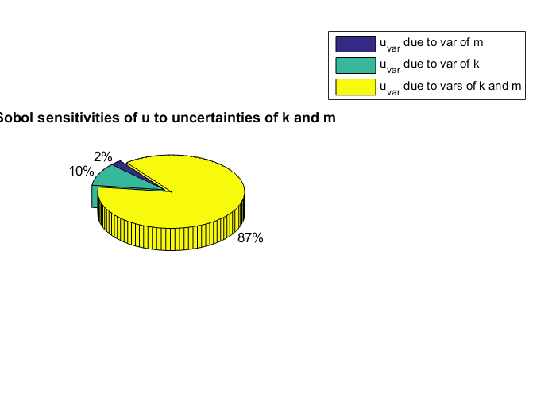